Review of “Papyri.info”
Table of Contents
Abstract
Papyri.info, made available by the Duke University, is a text collection of over 50,000 documentary papyri, i.e., Greek and Latin documents, dating back to the IV century BC – VIII century AD, which constitute a fundamental body of evidence for ancient everyday life in the classical antiquity. The collection consists of transcriptions encoded in EpiDoc (a subset of TEI for the representation of ancient documents preserved in inscriptions and in papyri), metadata, links to related resources, and, for some records, images and translations. It also includes a platform for the scholarly community to contribute to the database, whether for the digitisation of already published material or for the proposal of new contributions, with an editorial vetting process. This review aims to illustrate the content of the collection, discussing whether the relevant information is presented in a clear way to the user; to assess the usability of the interface for searching and browsing the papyri; and to analyse the technical aspects of the resource, especially the integration of different databases and the possibility of downloading and reusing the data, while highlighting, for all these aspects, both strengths and features that could be improved.
Aims and content
Papyri.info, launched in 2010,1 is an extensive digital text collection of Greek and Latin documentary papyri, that is, ancient documents (accounts, petitions, tax receipts, letters, etc.) dating from the IV century BC to the VIII century AD, mostly written on papyrus, and mainly discovered in archaeological excavations in Egypt.
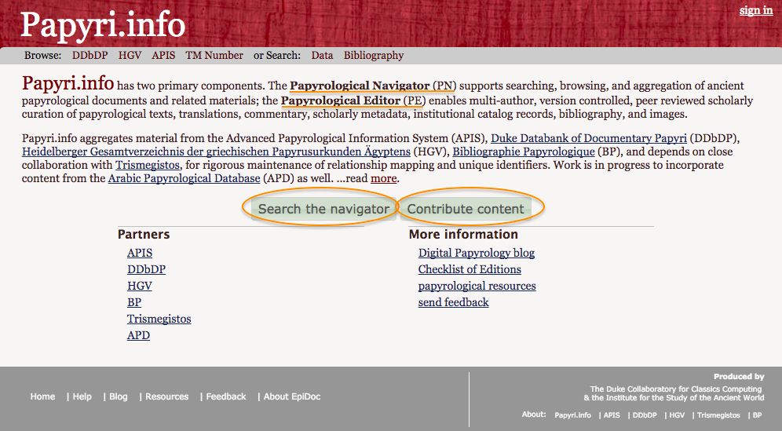
The collection is a general purpose one, based on the principles of completeness and of representativeness, within its domain of documentary papyrology. In fact, it has become a point of reference for documentary papyrology, as it aggregates three major databases of documentary papyri: the Duke Databank of Documentary Papyri (DDbDP), a very large collection of texts of documentary papyri realised by the Duke University; the Heidelberger Gesamtverzeichnis der griechischen Papyruskunden Ägyptens (HGV), created at the University of Heidelberg, which provides the metadata of all documentary papyri; and the University of Michigan Advanced Papyrological Information System (APIS), focused on images, as well as metadata, of papyri from the North American institutions, plus a few small federated collections worldwide3; also important is the integration of an essential tool for papyrological research, namely its main bibliographical database, the Bibliographie Papyrologique (BP). The aims of completeness and representativeness are not explicitly stated on the Papyri.info website. We find a mention of the collection content on the home page, but this presents no information on its extension: "The Papyrological Navigator (PN) supports searching, browsing, and aggregation of ancient papyrological documents and related materials". Notwithstanding, we can infer that completeness is a principle of the collection from the words of one of the founders of the DDbDP, John F. Oates (1993, 62): "We are aiming to construct a machine-readable data bank comprising all published Greek and Latin documentary papyri". Also, the contributions published by William H. Willis, co-founder of the DDbDP with Oates, on the plan of the entering of the texts and on the updates on this progress demonstrate the intention that the collection may be as complete as possible: firstly they digitised the papyri published in the more recent volumes of papyrological collections, secondly the remaining volumes "in reverse chronological order until all are done", thirdly "all texts published separately in journals", and lastly the most significant corrections gathered in the dedicated papyrological tool, the Berichtigungsliste (Willis 1984, 172; updates on the progress of the data entry are provided in Willis 1988, 1992, 1994). The collection currently amounts to 55,080 texts, which have been merged from the DDbDP, each of them provided with metadata exported from the HGV and also, as to papyri from American collections, from the APIS. In addition to these records with the papyrus texts, there are 31,936 records with metadata only, exported from the HGV and APIS; these records pertain to published papyri whose texts have not been digitised yet, or to unpublished papyri whose metadata and images have been put at disposal by the APIS researches to enable the scholarly community to study them.4 Finally, as just mentioned, there are images of some papyri, exported from the APIS database, and therefore pertaining to fragments mostly housed in American institutions.5
The collection is meant to be used in research, especially by papyrologists or by ancient historians who need to consult papyrological primary and secondary sources. Besides the fields of papyrology and ancient history, the collection contributes to historical linguistics, helping scholars to examine the features of the language of the papyri – texts that constitute an important body of evidence for Greek and Latin in their postclassical phases, and for their contacts with other languages of the Mediterranean.6 Papyri.info intends to meet scholarly standards by submitting the texts and the changes entered by users to an editorial vetting, and by reporting the emendations and the supplements (both already published and newly proposed by users) of the text transcriptions.
Participating institutions and staff, and their bibliographic identification
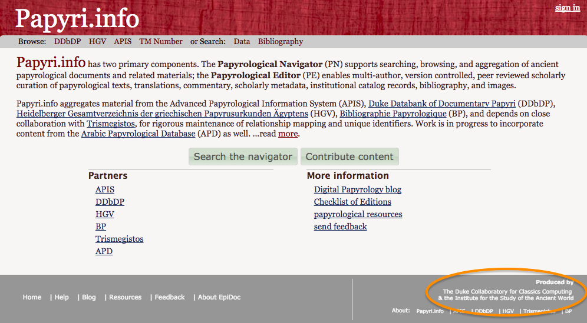 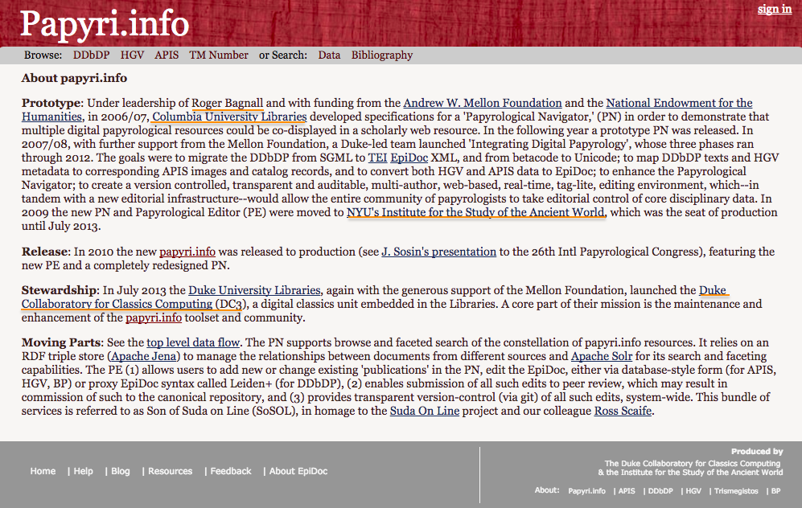
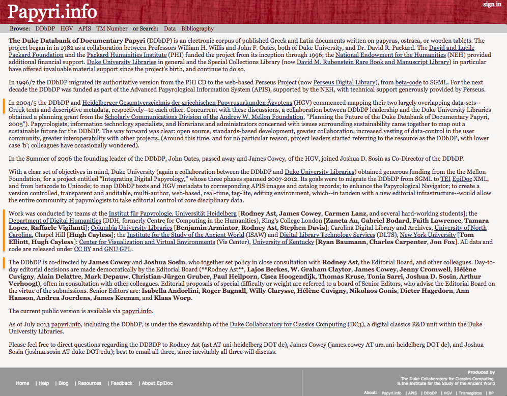
The then Centre for Computing in the Humanities, now Department of Digital Humanities, at King’s College London, was in charge of the first round of conversion from Beta Code into the Unicode character encoding, and from SGML into the EpiDoc XML standard (Bodard, Sosin, and Viglianti 2011). The Heidelberg Institut für Papyrologie mapped its HGV database with the other databases of papyri aggregated into Papyri.info, namely the DDbDP and APIS7, and, also currently, works for continuing the integration of the HGV metadata of new papyri into the PN8; also, James Cowey in Heidelberg is co-director of the DDbDP together with Joshua Sosin, as reported on the information page of the DDbDP (fig. 4). All this information reported on the DDbDP page is also very relevant to Papyri.info as a whole, as the texts, which it contributed, constitute the core of the PN. Furthermore, this page contains details on the editorial board who approves users' contributions, and it thus concerns the current state of the collection as well. As King's College London and the Institut für Papyrologie, too, gave a contribution to Papyri.info, and the latter still continues to collaborate, their role should be put in more evidence, and be as visible as the mention of the DC3 and the ISAW. Hence, King’s College London and the Institut für Papyrologie, too, should occur on the home page and in the history of the development of Papyri.info on the "About" page (fig. 3), and at least the HGV should be reported on the home page under the heading “Produced by” (at the bottom, on the right: see fig. 2). Other involved institutions mentioned on the "DDbDP" page, which should occur on the "About" page of Papyri.info, are the Columbia University Libraries, the University of North Carolina, the University of Kentucky and the New York University. Alternatively, the two pages about Papyri.info and the DDbDP could be merged into a single page.
Funding was provided by the Mellon Foundation and the National Endowment for the Humanities (NEH), as reported on the "About" page. Furthermore, from the "DDbDP" page we learn that financial support was granted to the Duke Databank by the Packard Foundation and the Packard Humanities Institute (PHI). As already noted, since Papyri.info has its roots in the DDbDP and therefore their histories are closely connected, it would be fair to mention the Packard funding in the "About papyri.info" page, as well: without the initial support from the Packard institutions, who also gave technical assistance, many of the texts that now populate the database could not have been entered.9
As for the long-term archiving of the data and institutional curation, information is provided, on the "About" page (in the "Stewardship" section) about the Duke Collaboratory for Classics Computing, based at the Duke University Library, reported as the unit who has the task of the "maintenance and enhancement of the papyri.info toolset and community". More details on the way the sustainability of Papyri.info is pursued are available in the related bibliography: open source development, through the use of a Git repository to store and update the data (Papyri.info IDP (Integrating Digital Papyrology) Data, https://web.archive.org/web/20180202152933/https://github.com/papyri/idp.data; standards-based formats, i.e., the Unicode character encoding, EpiDoc-conformant TEI markup, and the Resource Description Framework (RDF) model for the integration of the databases in the context of the Semantic Web.10
In conclusion, information about the creators and the participating institutions that provided expertise and funding is presented; on the other hand, it needs to be made more discoverable by integrating it into the information about the whole resource, rather than being referred to just in connection with one of its compounds. More details on the long-term data preservation, which are found in the bibliography on the project, could be added to the "About" page for any user interested in following up in the reasons of the choices made by the developers; as an alternative, users could be provided with the bibliographical references where this information can be found.
The integration of multiple papyrological resources
The different kinds of source databases
The Papyrological Navigator (PN) is formed by the aggregation of three pre-existing databases (as anticipated): while the Duke Databank of Documentary Papyri (DDbDP), which provided the texts of the papyri, is now merged into the PN, the two other resources that have been integrated into it, namely the Heidelberger Gesamtverzeichnis der griechischen Papyruskunden Ägyptens (HGV) and the Advanced Papyrological Information System (APIS), continue to exist independently. After the integration process of the HGV and APIS, updates in the HGV (i.e., metadata of newly published papyri or corrections to the metadata already existing) continue to be entered into the PN. James Cowey (Institut für Papyrologie of the University of Heidelberg), who is both editor of the HGV and co-director of the DDbDP, is the person responsible for updating the HGV and for exporting this data into GitHub, with the technical assistance of Carmen Lanz (of the Institut für Papyrologie as well). They report the changes to the researchers of the Duke Collaboratory for Classics Computing (Ryan Baumann, Hugh Cayless and Joshua Sosin), who are in charge for the maintenance of Papyri.info, so that they can merge the updates from GitHub into the Papyri.info branch. Since the data of the HGV are maintained and updated in a FileMaker database, whereas Papyri.info is an XML based project, the XML export possibility of FileMaker is used to crosswalk the data to XML, before adding them to GitHub.11
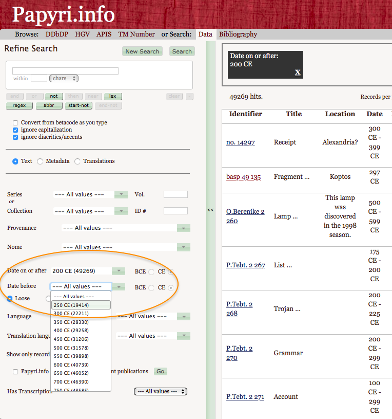 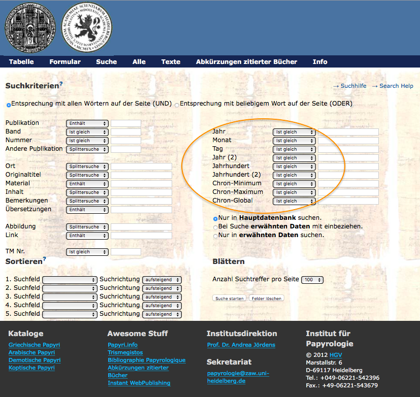
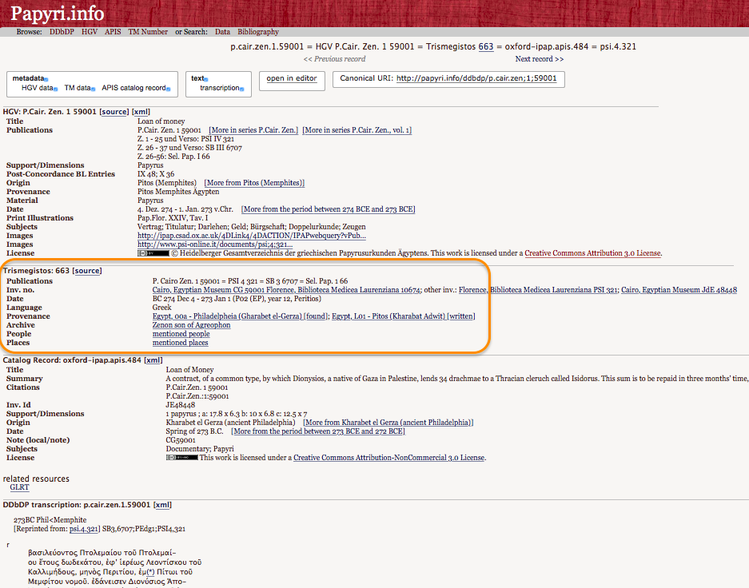
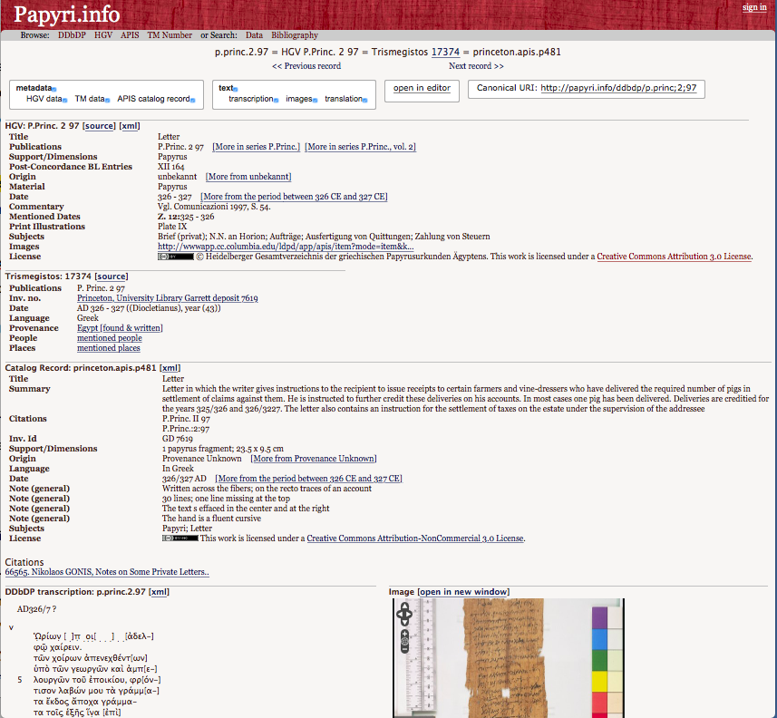
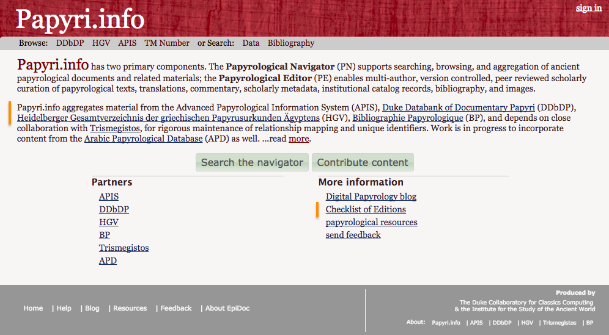 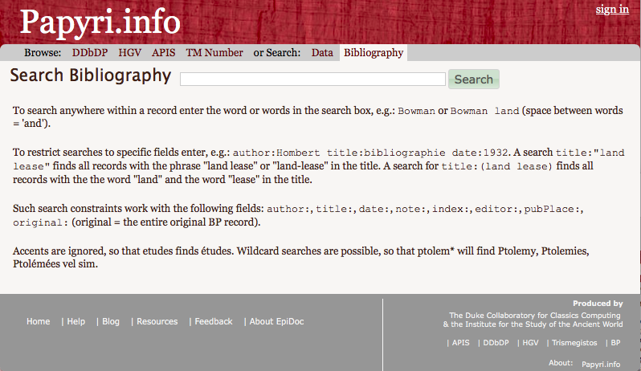
Finally, the Papyrological Navigator includes a Checklist of Editions, a list of papyrological editions and instruments also used as a reference for standard abbreviations. The presence of the Checklist, however, needs to be highlighted more on the home page: as a research tool, it should be distinguished from the other, as much as useful, resources indicated in the “More information” column of the home page, namely the Digital Papyrology blog, a list of papyrological resources, and indications for sending feedback (fig. 9). The link to the Checklist could be positioned next to the "Bibliography", in the menu bar on top. Also, the presence of the Checklist should be mentioned in the information about the material aggregated into Papyri.info, at least on the "About" page18, and possibly on the home page as well.
Regarding the mentioned Digital Papyrology blog, since its last update dates back to 2012, it seems more appropriate to include its link on the Papyri.info "About" page, indicating that this blog provides further details on the development of the resource: most posts concern updates on the functionalities of Papyri.info and the related TM database, and thus constitute a source of information for the history of the project.19
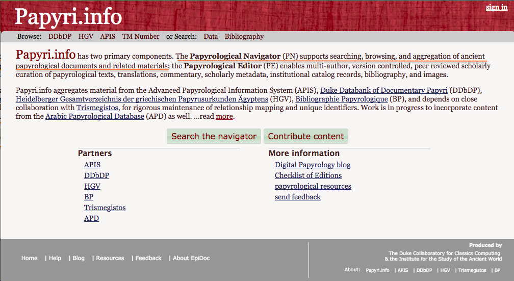
Issues in the collection content
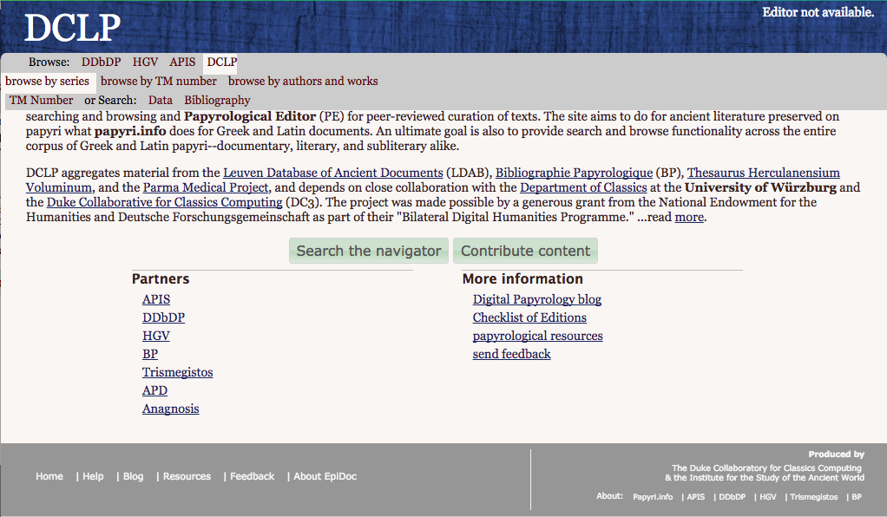 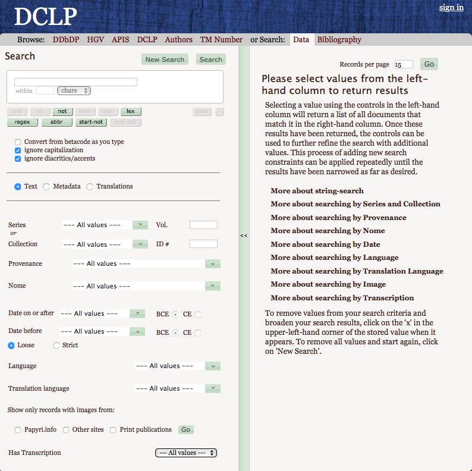
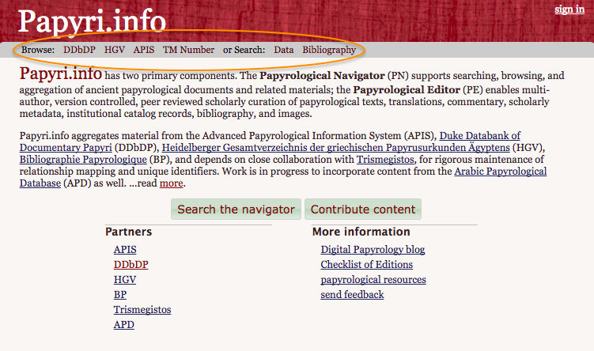 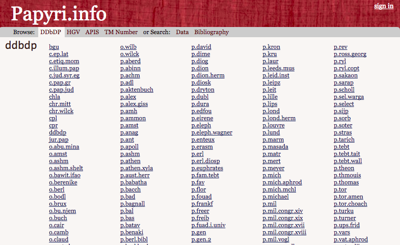
Usage and reuse scenarios of the collection
Usage for word-searches
When it was created, the goal of the collection was to speed word searches in order to find textual parallels and documents of the same type more quickly: this helps scholars to propose supplements, carry out a linguistic analysis, and study documents according to their different typologies. Such objectives, set out by the founders of the Duke Databank, John Oates and William Willis,24 still today represent the main type of usage of the collection: the users I have interviewed for my research so far25 have mentioned these purposes as the reasons why they avail themselves of the Papyrological Navigator in their everyday scholarly activities.

The EpiDoc encoding standard
Another function, which instead could not have been foreseen in the age when the Duke Databank was founded, is to allow the reuse of its data for new purposes, enabled by the introduction of standards-based encoding formats. Namely, the PN database also works as a textual repository, in that it can provide text data for further collection-external research. In fact, its texts are encoded in the standard EpiDoc markup, a set of guidelines for the digital representation of ancient texts of inscriptions and papyri, based on TEI elements and attributes, which has been employed in a variety of projects.26 The texts have been converted to EpiDoc when the source databanks were integrated into Papyri.info, in the Integrating Digital Papyrology project.27
The EpiDoc model has been created to represent in digital form the texts that are traditionally transcribed according to the 1932 Leiden editorial conventions.28 These texts, inscriptions and papyri, are ancient documents of direct tradition, i.e., discovered in archaeological excavations rather than handed down to us through medieval tradition. This implies the advantage of their chronological closeness to the ancient historical events and literary works, but also the problem of their severely damaged state of preservation. Hence the necessity to develop such a system as the Leiden Convention: this allows accounting for the physical appearance of the texts and for the editorial decisions taken in the restoration of the missing words and in the interpretation of the signs employed by the ancient scribes. Examples from the Leiden transcription style are the square brackets that surround the letters lost in a lacuna and restored by the editor, the dots under the line to indicate letters of uncertain reading, and round brackets to expand a word written in abbreviation by the scribe.
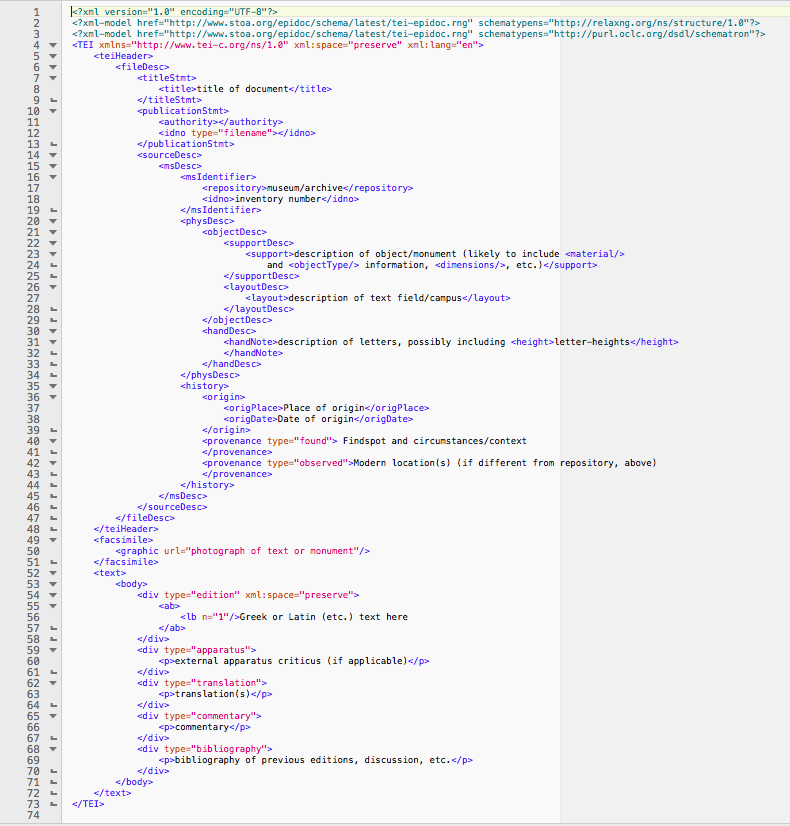<teiHeader> element of an EpiDoc file contains a
<sourceDesc> element, which marks information about the
institution that houses the papyrus or inscription, the inventory number, the
support that bears the writing, the layout, the hand, the place of origin and the
date (see fig. 17 for the template with
the basic structure of an EpiDoc file; this is downloadable from https://sourceforge.net/p/epidoc/wiki/Examples/ (accessed 11 January
2018). After the <teiHeader>, the <text>
element contains <div> elements for the different parts of the
edition: text (enclosed by a further element, <ab>), apparatus,
translation, commentary and bibliography.
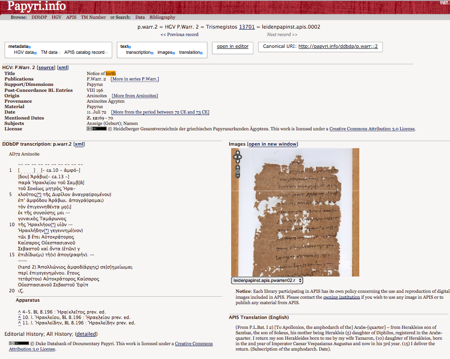 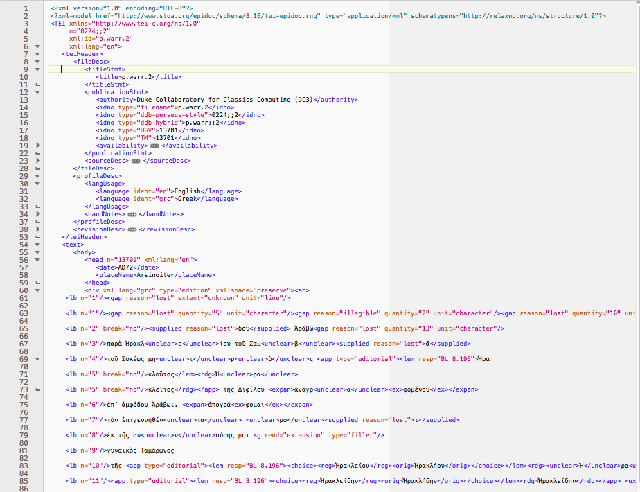<gap reason="lost"
quantity="5" unit="character"/>; an uncertain letter, e.g. ε in line
3, is enclosed within the <unclear> tag, and will be displayed
in Papyri.info with a dot under the letter, as according to the
Leiden convention; abbreviations are rendered by surrounding the whole expanded
word with the <expan> tag, and adding a further tag,
<ex> around the letters omitted by the scribe.
The XML files of Papyri.info have a Creative Commons Attribution 3.0 Licence, which allows free adaptation of the material for scholarly reuse.29 The collection has recently started being exploited in this sense, even though there are still few examples of this use, which obviously requires higher technical skills. One needs to download the XML files of the texts, which can be done both for single papyri and for the collection as a whole. Texts can be downloaded individually by clicking on the "xml" link in the transcription heading of each papyrus record. Otherwise, one can download the entire collection from the GitHub data repository of Papyri.info (Papyri.info IDP (Integrating Digital Papyrology) Data, https://web.archive.org/web/20180202152933/https://github.com/papyri/idp.data). Here the XML files of the texts are contained in the "DDB_EpiDoc_XML" folder, grouped in bundles according to the publication volumes; a bundle with the texts provided with translations in English or German is also available from the GitHub repository, by the name "HGV_trans_EpiDoc". While the decision to make this and all the other data of Papyri.info publicly available ensures transparency and allows a variety of scholarly reuses, the possibility to download of the texts could be more flexible and more clearly indicated. Ideally, it should be possible to download a bundle of selected files as well, besides those grouped by their publication volume and those that include translations. Also, a link to the GitHub repository should be provided, as there is currently no way to know about the possibility of downloading all the texts in one bundle or the translations (as well as the files of the metadata, the bibliography, some Arabic papyri, and the RDF data).30
Projects that reuse the content of Papyri.info
The University of Helsinki Sematia project31 is utilising texts downloaded from Papyri.info to build up a corpus of treebanked Greek documentary papyri. After being downloaded, the texts are enriched with morpho-syntactic annotation, carried out with the Arethusa tool on the Perseids platform. The corpus will enable the analysis of the linguistic structures of the texts on an extensive scale, and will facilitate comparisons between the scribes' original text (with mistakes, peculiar spellings, and non-expanded abbreviations) and the standard Greek, and between different scribes' spellings. Another example of reuse of the collection for the needs of one's research is a project that is being carried out for a doctoral dissertation in the Department of Linguistics of the KU Leuven, by Alek Keersmaekers. Like in the Sematia project, he is using the material downloaded from the PN to create a corpus of morphologically annotated texts of documentary papyri; however, in Sematia the linguistic annotation is carried out manually, whereas Keersmaekers performs it automatically on the basis of machine learning techniques.32
The possibility of downloading the EpiDoc XML files with the texts and metadata and to repurpose the collection to other researches' ends obviates the issue of the lack of linguistic or semantic annotation, sometimes pointed out by users.33 In fact, the texts of Papyri.info have been used in the Trismegistos (TM) platform to create databases of person and place names, respectively TM People and TM Places: a computer-aided extraction of these categories of nouns was applied to the downloaded texts, starting from the automatic filtering of capitalised words.34 Recently, Trismegistos added to its platform a new database, TM Words 35, developed in cooperation with Alek Keersmaekers, again created on the basis of the XML version of the Papyri.info texts available on GitHub: it contains all the words attested in papyri in the texts on Papyri.info, and they are searchable by lemmata and conjugated or declined forms.
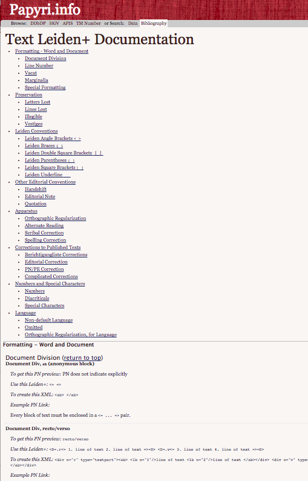
The user interface of the Papyrological Navigator (PN)
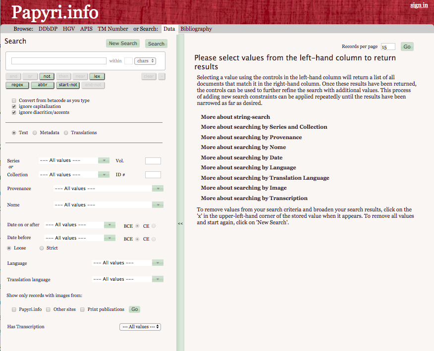 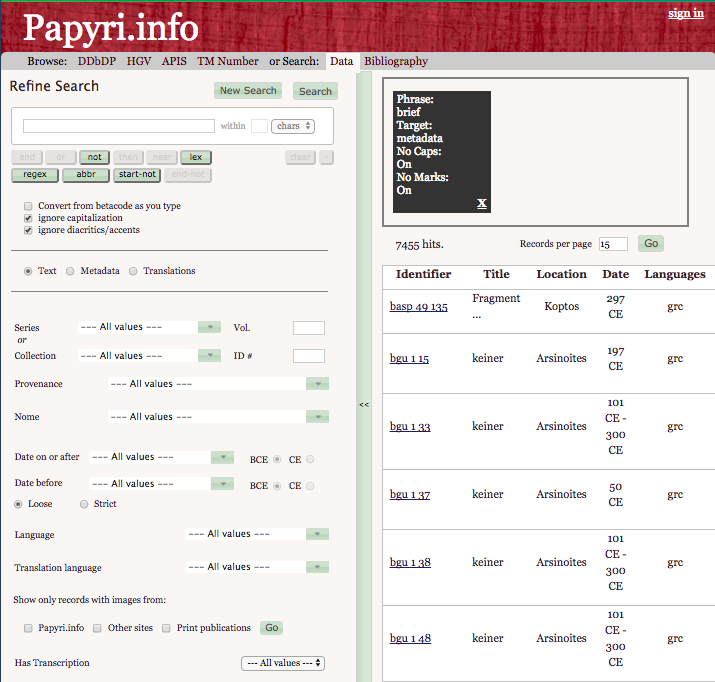
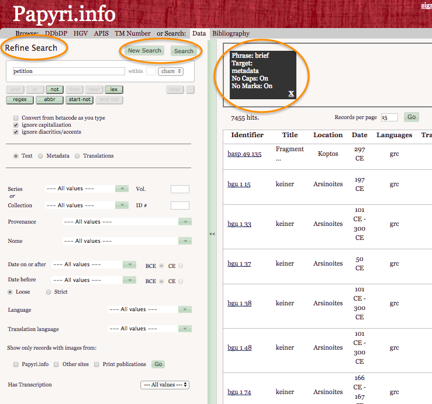
On the result page, one may expect that entering a new word and hitting the "Search" button will perform a new search; the result is, instead, a refined search. Users should, in fact, click on the x-button in the black box on top of the results to remove the previous search value; however, this button is not evident, as was also pointed out by one of the interviewed users. As an alternative, one can perform a new search by clicking on the "New Search" button; users, though, need to remember that they should first click on "New Search", and only then enter the new value (and finally perform their search by hitting "Search"): if one types the new word first, and then hits "New Search", as it may happen, this will remove the new value. This aspect could be improved by allowing the "New Search" button to perform a search with the new value, rather than to go back to the PN home page. Moreover, the "Search" button could be renamed "Refine Search" to explain its function more clearly; even though this phrase is already present, on the top left, it would be more evident if it was positioned on the button, where users actually need to click.
Other aspects of the PN user interface can be better illustrated by way of a comparison with the interface of the HGV, the Heidelberg database with records of metadata. As we have seen, the PN offers more accurate results than the HGV because it does not contain multiple records for the same papyrus, as the HGV does whenever a dating is uncertain. On the other hand, a reason why one may still wish to utilise the HGV database is that its interface offers more possibilities of search than that of the PN. The HGV allows searching for a date according to a single year, and even a month or a day; moreover, one can search for any range of time (by entering any year into the "ChronMinimum" and "ChronMaximum" fields). Instead, on the PN one can perform a search by date exclusively by selecting a predefined value in the "Date on or after" and/or "Date before" fields, within a fifty-year range. Surprisingly, if one tries searching for a single year among the PN metadata (by entering it in the search field and selecting the "Metadata" option), no result is retrieved, although the help information (in the right-hand pane of the search) states that this search is possible, as one in fact expects.37
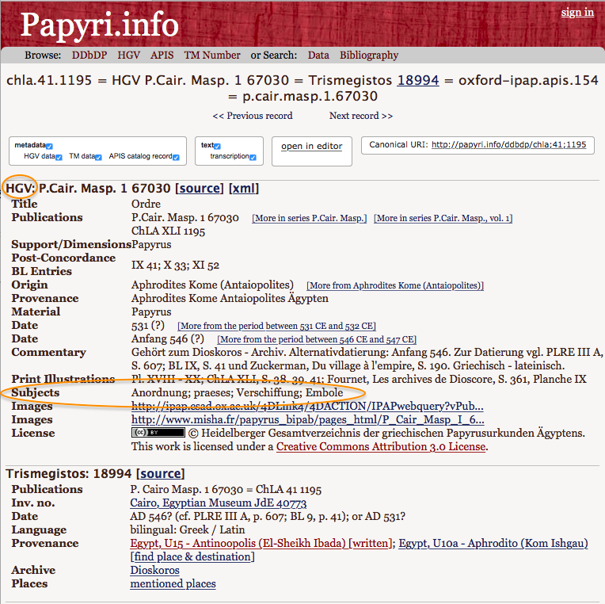
It is also true that users look for types of documents not only by means of a metadata search, but also by searching the texts for significant words that are typical of certain documents; they are therefore able to find texts of a certain category with this other method. Two users I interviewed combine this kind of search with the previous one about the metadata: for example, they look up formulas or keywords, like "ἐξαυτῆς" ("at once"), a word typically occurring in summons, in order to retrieve all the texts of this category. Indeed, the HGV warns users that "there is no guarantee of completeness in the case of searching according to content as we did not develop a system of categorisation"38; it would be useful to point out this limitation in the PN search form, as well, in the help information in the right-hand part of the search page (among the information about "Metadata", in the "More about string-search"), so as to suggest users to use both search methods.
In conclusion, there are a few circumscribed problems that slightly limit the usability of the search interface, especially for first users, sometimes causing them to spend more time than necessary when performing a new search, looking for typologies of documents, and seeking for texts within a limited time-span.
Conclusion
The process of integration of the three main databases, accomplished in the Integrating Digital Papyrology project, has allowed the integration of different kinds of data, in different formats: the texts, coming from the Duke Databank and encoded in Beta Code and SGML, were converted into Unicode and EpiDoc TEI; they were integrated with the metadata and the images, on records encoded in FileMaker and exported to XML, from the Heidelberg HGV and the Michigan APIS databases. The merging of texts and metadata was facilitated by the addition, to the texts, of a unique identifier, i.e., the Trismegistos number. A great effort was put into this process, in the Integrating Digital Papyrology project which consisted in three phases and lasted six years, from 2007 to 2012 (Sosin 2010, Baumann et al. 2011). Papyrologists can thus now access their main resources from only one extensive platform. The conversion to EpiDoc, an open markup standard which is a subset of TEI, ensures that Papyri.info has a high degree of compatibility with other projects in the Humanities and a long-term sustainability.
To summarise the strengths and weaknesses of Papyri.info, we might highlight that the comprehensiveness of the material, the integration of the different databases (both of texts and metadata, and of research tools) and the ability of an integrated search across them explain why this is an indispensable resource for the study of documentary papyri. However, precisely to valorise the collection, that is, to enable users to take advantage of all its features, there should be a better communication about the characteristics of its content and tools, and about the procedure to contribute new data. Other useful additions would be pointing to resources where similar content can be found, as happens for the literary and medical papyri on the Digital Corpus of Literary Papyri, and more accuracy in the documentation relative to the involved institutions and staff.
Bibliography
- APIS – Advanced Papyrological Information System, University of Michigan Library, https://web.archive.org/web/20160810083015/http://www.lib.umich.edu:80/papyrology-collection/advanced-papyrological-information-system-apis.
- Arethusa. https://web.archive.org/web/20171009155602/http://www.perseids.org/tools/arethusa/app/#/.
- Bagnall, R. S. 1998. "Review of Heidelberger Gesamtverzeichnis der griechischen Papyrusurkunden Ägyptens". Accessed 24 October 2018. Bryn Mawr Electronic Resources Review. http://bmcr.brynmawr.edu/bmerr/1998/BagnaHeideAug.html.
- Bagnall, R. 2010. "Integrating digital papyrology". In Online humanities scholarship: the shape of things to come, edited by F. Moody & B. Allen. New York: Mellon Foundation. Accessed 30 September 2017. http://hdl.handle.net/2451/29592.
- Bagnall R. S. and T. Gagos. 2007. "The Advanced Papyrological Information System: Past, Present, and Future." In Proceedings of the 24th International Congress of Papyrology, Helsinki 2004, edited by J. Frösén, T. Purola, and E. Salmenkivi, vol. 1, 59-74. Helsinki: Societas Scientiarum Fennica.
- Baumann, R. 2013. "The Son of Suda On-Line". In The Digital Classicist 2013 ( = BICS Supplement 122), edited by S. Dunn and S. Mahony, 91-106. London: Institute of Classical Studies, School of Advanced Study, University of London. https://web.archive.org/web/20171025174938/https://dukespace.lib.duke.edu/dspace/bitstream/handle/10161/8414/SUPP-122-07-baumann-offprint%20%281%29.pdf?sequence=1.
- Baumann, R., G. Bodard, H. Cayless, J. Sosin, and R. Viglianti. 2011. “Panel: Integrating Digital Papyrology”, in Digital Humanities 2011: June 19-22, Conference of the Alliance of Digital Humanities Organisations, hosted by the Stanford University Library. https://web.archive.org/web/20170710154928/http://dh2011abstracts.stanford.edu/xtf/view?docId=tei/ab-193.xml;brand=default.
- Berichtigungsliste der griechischen Papyrusurkunden aus Ägypten, voll. 1-13. 1922-2017.
- Bibliographie Papyrologique. Association Égyptologique Reine Élisabeth, Centre de Papyrologie et d'Épigraphie greque de l'Université libre de Bruxelles. Accessed 25 September 2017. http://www.aere-egke.be/BP.htm.
- Bodard G. 2010. "EpiDoc: Epigraphic Documents in XML for Publication and Interchange". In Feraudi-Gruénais, F. 2010. Latin on stone: Epigraphic Research and Electronic Archives. Lanham, MD: Lexington Books, 101-118. https://web.archive.org/web/20180111113342/http://www.stoa.org/wordpress/wp-content/uploads/2010/09/Chapter05_EpiDoc_Bodard.pdf.
- Cayless H., C. Roueché, T. Elliott, and G. Bodard. 2009. "Epigraphy in 2017". Digital Humanities Quarterly 3.1. https://web.archive.org/web/20170624164625/http://www.digitalhumanities.org:80/dhq/vol/3/1/000030/000030.html.
- Clarysse, W. 2010. "Linguistic Diversity in the Archive of the Engineers Kleon and Theodoros". In Evans-Obbink 2010, 35-50.
- Digital Corpus of Literary Papyri (DCLP). University of Heidelberg. https://web.archive.org/web/20171024181128/http://litpap.info.
- Digital Papyrology blog. https://web.archive.org/web/20170927110954/http://digitalpapyrology.blogspot.co.uk.
- Depauw M. and B. Van Beek. 2009. "People in Greek Documentary Papyri. First Results of a Research Project". JJP 39, 31-47.
- EpiDoc: Epigraphic Documents in TEI XML. Elliott T., Bodard G., Cayless H., et al. (2006-2016), Online material, available, accessed 30 September 2017: http://epidoc.sf.net.
- Evans, T.V. and D.D. Obbink. 2010. The language of the papyri. Oxford: Oxford University Press.
- Gagos, T. 1996. "Scanning the Past: A Modern Approach to Ancient Culture." Library Hi Tech, 14 (1): 11-22. Accessed 13 March 2018. http://dx.doi.org/10.1108/eb047974.
- Gagos, T. 1997. "Advanced Papyrological Information System (APIS): The Michigan Experience." LLC 12 (3): 155-157. Accessed 13 March 2018. https://doi.org/10.1093/llc/12.3.155.
- Hagedorn D. 1994. "Gesamtverzeichnis der griechischen Papyrusurkunden Ägyptens" In Datenbanken in der Alten Geschichte ( = Computer und Antike 2), edited by M. Fell, C. Schäfer, L. Wierschowski, 226-231. St. Katharinen.
- HGV – Heidelberger Gesamtverzeichnis der griechischen Papyruskunden Ägyptens, Institut für Papyrologie. Universität Heidelberg. https://web.archive.org/web/20170713104205/http://aquila.zaw.uni-heidelberg.de/start.
- Oates J. F. 1993. "The Duke Data Bank of Documentary Papyri". In Accessing Antiquity: The Computerization of Classical Studies, edited by Jon Solomon and Robert D. Novak, Tucson: University of Arizona Press, 62-72.
- Papyri.info. https://web.archive.org/web/20170925124125/http://papyri.info.
- Reggiani N. 2016. "The Corpus of Greek Medical Papyri and Digital Papyrology: new perspectives from an ongoing project". In Altertumswissenschaften in a Digital Age: Egyptology, Papyrology and beyond. Proceedings of a conference and workshop in Leipzig, November 4-6, 2015, edited by M. Berti and Naether. Leipzig. https://web.archive.org/web/20171024182110/http://www.qucosa.de/fileadmin/data/qucosa/documents/20172/1.9.%20DHEgypt15%20-%20Reggiani,%20Greek%20Medical%20Papyri%20-%20Text.pdf.
- Reggiani N. 2017. Digital Papyrology, vol. 1, Methods, Tools and Trends. Berlin-Boston: De Gruyter. Accessed 13 March 2018. https://www.degruyter.com/viewbooktoc/product/486978.
- Sematia. University of Helsinki. Accessed 5 October 2017. https://sematia.hum.helsinki.fi/docs/.
- Sosin J., 26 October 2010. “Digital Papyrology”. Blog post on The Stoa Consortium. https://web.archive.org/web/20170408110552/http://www.stoa.org/archives/1263.
- TEI: Text Encoding Initiative. https://web.archive.org/web/20170711100834/http://www.tei-c.org/index.xml.
- The Digital Classicist. The Digital Classicist Wiki. https://web.archive.org/web/20170715110130/http://wiki.digitalclassicist.org/Main_Page.
- Trismegistos (TM). KU Leuven. https://web.archive.org/web/20170701160733/http://www.trismegistos.org/index.html.
- Willis W. H. 1984. "The Duke Data Bank of Documentary Papyri", in Atti del XVII Congresso Internazionale di Papirologia, Napoli 1983, vol. 1, 167-173. Napoli: Centro internazionale per lo studio dei papiri ercolanesi.
- Willis W. H. 1988. "The Duke Data Bank of Documentary Papyri". In Proceedings of the XVIII International Congress of Papyrology, Athens 1986, edited by B. Mandilaras, vol. 2, 15-20. Athens: Greek Papyrological Society.
- Willis W. H. 1992. "The new mode of access to the Duke Data Bank of Documentary Papyri". In Proceedings of the XIX International Congress of Papyrology, Cairo 1989, edited by A. H. S. El-Mosalamy, vol. 1, 125-131. Cairo: Ain Shams University.
- Willis W. H. 1994. "The New Compact Disk of Documentary Papyri". In Proceedings of the 20th International Congress of Papyrology, Copenhagen 1992, edited by A. Bülow Jacobsen, 628-631. Copenhagen: Museum Tusculanum Press, University of Copenhagen.
Notes
- The launch took place at the XXVI International Congress of Papyrology (Geneva), with a talk by Joshua Sosin (Sosin 2010); this information is reported in the "About" page of Papyri.info, https://web.archive.org/web/20170603015536/http://www.papyri.info/docs/about. ↑
- This collaborative model of publishing, which also includes an editorial board to ensure the quality of the texts, is illustrated in Baumann 2013, 92-93; Bagnall 2010, 5-6; Sosin 2010. ↑
- For the physical collections that have been digitised in the APIS database, see the overview of this project outlined in Bagnall-Gagos 2007, in part. 66-67. Roger Bagnall and Traianos Gagos, founders of APIS, soon realised the potential for digitisation to bring to light almost forgotten collections; this led them to digitise not only the papyri of the Michigan and other American collections, but also some unpublished papyri of European institutions (Bagnall-Gagos 2007, 66-67). ↑
- Gagos 1996, 19-20; Gagos 1997, 155. ↑
- These figures are drawn from the search form on the PN home page: at the bottom, the drop-down menu of the "Has Transcription" selection criterion shows the values "true (55080)" and "false (31936)". As one can infer, this indicates the records complete with texts and those which so far exclusively contain metadata. ↑
- Cf. Evans-Obbink 2010, 1-3, for an overview on the significance of the papyri for the study of the ancient languages. The authors also explain how the research on the language of the papyri is one of the areas that mostly benefits from technological advances. Through the citations of the DDbDP in this volume (found by searching for "DDbDP" in the index) one can find instances of linguistic researches conducted with the aid of this database, now merged into Papyri.info. ↑
- Sosin 2010; Papyri.info, "The DDbDP"; Integrating Digital Papyrology 3, 10-11, 18-21. ↑
- J. Cowey and C. Lanz, personal communications. ↑
- On the decisive contribution of the Packard Foundation and the PHI to the creation of the DDbDP, see the history of this database outlined in Oates 1993, 62-64, 69-71. ↑
- On the conversion of the texts in Beta Code and SGML into Unicode and EpiDoc XML, see Baumann et al. 2011, esp. "Integrating Digital Papyrology" and "Lessons from the conversion of the Duke Databank of Documentary Papyri from legacy formats into EpiDoc TEI XML"; Baumann (2013, 93-100) explains the choice of Git and its functioning; Baumann et al. 2011, esp. "The Papyrological Navigator: Project Integration with RDF", and Baumann 2013, 100 deal with the use of an RDF triplestore for integrating the source databases. ↑
- I was provided with the above information on the updating of the HGV and the PN by James Cowey and Carmen Lanz, in personal communications. ↑
- Joshua Sosin, personal communication. ↑
- James Cowey, personal communication. The presence of multiple records for one text, in order to represent different possibilities of dating, has also been reported in Hagedorn 1994, 227, and in Bagnall 1998. For example, a search for petitions retrieves 2251 results on the PN and 2285 on the HGV (it is possible to search for the content type by entering a term in German, e.g. "Eingabe" for "petition", both in the HGV, in the "Inhalt" field, and in the PN selecting the "Metadata" option). ↑
- This feature has been noted by Reggiani (2017, 74-75). ↑
- James Cowey, personal communication. The presence of multiple records for one text, in order to represent different possibilities of dating, has also been reported in Hagedorn 1994, 227, and in Bagnall 1998. For example, a search for petitions retrieves 2251 results on the PN and 2285 on the HGV (it is possible to search for the content type by entering a term in German, e.g. "Eingabe" for "petition", both in the HGV, in the "Inhalt" field, and in the PN selecting the "Metadata" option). ↑
- We find this information on the Bibliographie Papyrologique home page: 'Une version électronique simplifiée de la «BP rétrospective» (provisoirement arrêtée en 2012) est également accessible via la plate-forme papyri.info'. This problem is pointed out in Reggiani (2017, 20-21). ↑
- Cf. Reggiani 2017, 20-22 for this discussion on the advantages of the integration between the PN and the BP. ↑
- https://web.archive.org/web/20170603015536/http://www.papyri.info/docs/about, see below, fig. 3. ↑
- Reggiani (2017) has in fact used the information available on the Digital Papyrology blog to show the modifications added to Papyri.info over the years; see, e.g., Reggiani 2017, 236, n. 119. ↑
- A user I interviewed proved not to be aware of the scope of the collection, as she remarked that she cannot find, on the PN, the literary papyri she needed; she had been attending a module of Papyrology a few years ago, but either was not given this indication or was not able to recollect it as she had then not carried out papyrological research for a few years. ↑
- Cf. the DCLP home page: "DCLP offers information about and transcriptions of Greek and Latin literary and subliterary papyri". On the addition of literary and medical papyri to this database, see Reggiani 2017, 253, 274-275. ↑
- On the development of this project of the University of Parma, and on a discussion of the issues involved in the digitisation of texts with different features from the documentary ones, see Reggiani 2016 and Reggiani 2017, 251-254, 274-275. ↑
- Cf. Reggiani 2017, 275: "At the time, digitizations took place in the Papyrological Editor, in a special community called 'ParmaMed', which avoided the phase of submitting the edited texts to the Papyri.info board; when the DCLP challenge started, the Parma medical project became one of the earliest partners to contribute content". ↑
- Oates 1993, 64-66; Willis 1984, 167-169. ↑
- The sixteen users I have interviewed to date include PhD students and early career researchers of different European universities. Interviews and other data will be analysed in my PhD dissertation with the title The role of Digital Humanities in Papyrology: practices and user needs in papyrological research, at the Institute of Classical Studies, London. This analysis aims to gain insight into the scholarly use of Digital Classics methods and tools, in particular by papyrologists and other classicists who need to consult papyrological resources. ↑
- EpiDoc guidelines and material are available at http://epidoc.sf.net (accessed 11 January 2018). A list of projects that use the EpiDoc standards is available at The Digital Classicist Wiki, "Category:EpiDoc", https://web.archive.org/web/20170930144706/https://wiki.digitalclassicist.org/Category:EpiDoc. ↑
- Cf. Integrating Digital Papyrology 3; Sosin 2010. ↑
- For more details on the history of EpiDoc, I refer to Bodard 2010, 101-104, and Cayless et al. 2009, 1-2. ↑
- Creative Commons, "Attribution 3.0", https://web.archive.org/web/20170930110422/https://creativecommons.org/licenses/by/3.0/. As well as the XML files of the texts, also the code of its core components is open to reuse, as it is freely available online, stored in Git (Baumann 2013). ↑
- The information on the GitHub repository, where the complete data of Papyri.info can be accessed, is only reported, as far as I am aware, in the bibliography where the GitHub repository is mentioned (Baumann 2013, 93-100), and on The Digital Classicist. The Digital Classicist Wiki. "Greek and Latin texts in digital form". https://wiki.digitalclassicist.org/Greek_and_Latin_texts_in_digital_form#Texts_with_translations. Accessed 2 February 2018. ↑
- Sematia. University of Helsinki. https://sematia.hum.helsinki.fi/docs/. Accessed 5 October 2017. This project and the issues of linguistic annotation of fragmentary papyrus texts are discussed in Reggiani 2017, 182-184. ↑
- KU Leuven, Research Portal, "Variety and change in the Ancient Greek papyri: a corpus-linguistic study of the use of tense, aspect and modality in the Greek complementation system" by A. Keersmaeker, https://www.kuleuven.be/onderzoek/portaal/#/projecten/3H160543 (accessed 10 October 2017). ↑
- One of the interviewees mentioned the fact that there are no morpho-syntactic annotations in the texts in the PN, which therefore cannot be queried in this way, for example to search for all the infinitives. By the same token, Clarysse (2010, 44) remarks the absence of syntactical annotation, which would permit to search for different kinds of clauses. ↑
- The procedure for extracting person names from the texts of the DDbDP is described in Depauw-van Beek 2009, 33-37. ↑
- TM Words (https://web.archive.org/web/20180313155651/https://www.trismegistos.org/words/index.php), unlike the others TM databases, is not indicated on the TM platform homepage, maybe because it is still in its beta phase. It is anyway known to papyrologists as it was announced by Mark Depauw, the TM project director, on the Papy-list, the papyrological discussion list, on 9 January 2018. ↑
- Papyri.info, "Text Leiden+ Documentation", https://web.archive.org/web/20171010170456/http://papyri.info/docs/leiden_plus. ↑
- Cf. the following passage in the "More about string-search" section, about the metadata search: "Metadata: Searches the metadata associated with the document - for example, the identification number, location, and dating of the document". ↑
- HGV, "Search Tips and other Information", https://web.archive.org/web/20171004170724/http://aquila.zaw.uni-heidelberg.de/help/search/en. ↑
@article{papyri-info,
author = {Vannini, Lucia},
title = {Review of “Papyri.info”},
journal = {RIDE – A review journal for digital editions and resources},
number = {9},
year = {2018},
doi = {10.18716/ride.a.9.4},
url = {https://doi.org/10.18716/ride.a.9.4},
}TY - JOUR
AU - Vannini, Lucia
TI - Review of “Papyri.info”
T2 - RIDE – A review journal for digital editions and resources
IS - 9
PY - 2018
DA - 2018/11
DO - 10.18716/ride.a.9.4
UR - https://doi.org/10.18716/ride.a.9.4
PB - Institut für Dokumentologie und Editorik e. V.
LA - en
ER - Vannini, L. (2018). Review of “Papyri.info”. RIDE – A review journal for digital editions and resources, (9). https://doi.org/10.18716/ride.a.9.4Vannini, Lucia. "Review of “Papyri.info”." RIDE – A review journal for digital editions and resources, no. 9, 2018. https://doi.org/10.18716/ride.a.9.4.Vannini, Lucia. "Review of “Papyri.info”." RIDE – A review journal for digital editions and resources, no. 9 (2018). https://doi.org/10.18716/ride.a.9.4.